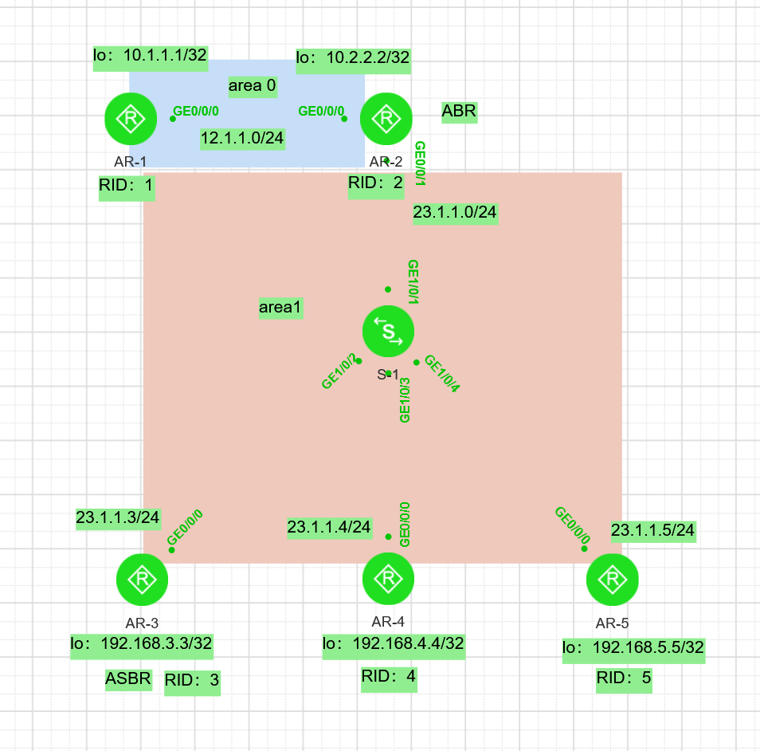

OSPF特性小实验
Stage1
topology 实验拓扑沙箱OSPF-001设备密码：ABCabc123

| 设备 | 接口 | 地址 | 区域 | 备注 |
|---|---|---|---|---|
| R1 | GE0/0/0 | 12.1.1.1/24 | Area 0 | |
| Lo0 | 10.1.1.1/32 | Area 0 | ||
| R2 | GE0/0/0 | 12.1.1.2/24 | Area 0 | ABR |
| GE0/0/1 | 23.1.1.2/24 | Area 1 | ||
| Lo0 | 10.2.2.2/32 | Area 0 | ||
| R3 | GE0/0/0 | 23.1.1.3/24 | Area 1 | ASBR |
| Lo0 | 192.168.3.3/32 | Area 1 | ||
| R4 | GE0/0/0 | 23.1.1.4/24 | Area 1 | |
| Lo0 | 192.168.4.4/32 | Area 1 | ||
| R5 | GE0/0/0 | 23.1.1.5/24 | Area 1 | |
| Lo0 | 192.168.5.5/32 | Area 1 | ||
| SW1 | GE0/0/1–4 | 不配 | — |
- 五台接口 IP + Router-ID
- OSPF 进程 1，按上表分区域
- R3 造一条假外部路由再引入：
ip route-static 8.8.8.0 24 NULL0
ospf 1
import-route static - 验收：R1 上能看到 8.8.8.0/24，协议 OSPF，下一跳 12.1.1.2
Stage2
questions？
Q1. 谁是 DR？谁是 BDR？
Q2. 哪两台之间应该是 2-Way？为什么？
Q3. 如果现在把 R2 的 priority 改成 0，DR 会变成 R4 吗？——先想清楚再改，OSPF 在这里有个坑。
答
Q1:OSPF的非抢占特性，在修改R2、R4的优先级时“重启OSPF进程”，R3先起等待40s后成为DR，R2加入发现 DR 已存在 → 只能争 BDR，R4（100）加入，DR/BDR 都满了 → 成为DROther。
Q2：DROthe之间只保持邻居关系（Two-Way），所以不会建立FULL邻接。DROthe只和DR、BDR建立FULL。
邻接越多，LSA 泛洪越爆炸。DR/BDR 的本质是把网状改成星型：
没有 DR：
A ── B
│ ╲╱ │
│ ╱╲ │
C ── D
有 DR/BDR：
A ──┐
B ──┼── DR ── BDR
C ──┘
(DROther 只跟 DR/BDR 建 Full)
Q3：与Q1答案相同，套用OSPF非抢占特性，得出R3为DR，R4为BDR。优先级0是为不参与选举。
priority 0的实战意义
这是工程上最常用的一个配置。
场景：
- 核心/汇聚层设备当 DR，接入层一律
priority 0 - 因为接入层设备性能弱、链路不稳，让它当 DR 会导致 LSA 泛洪中断
interface GigabitEthernet0/0/0
ospf dr-priority 0